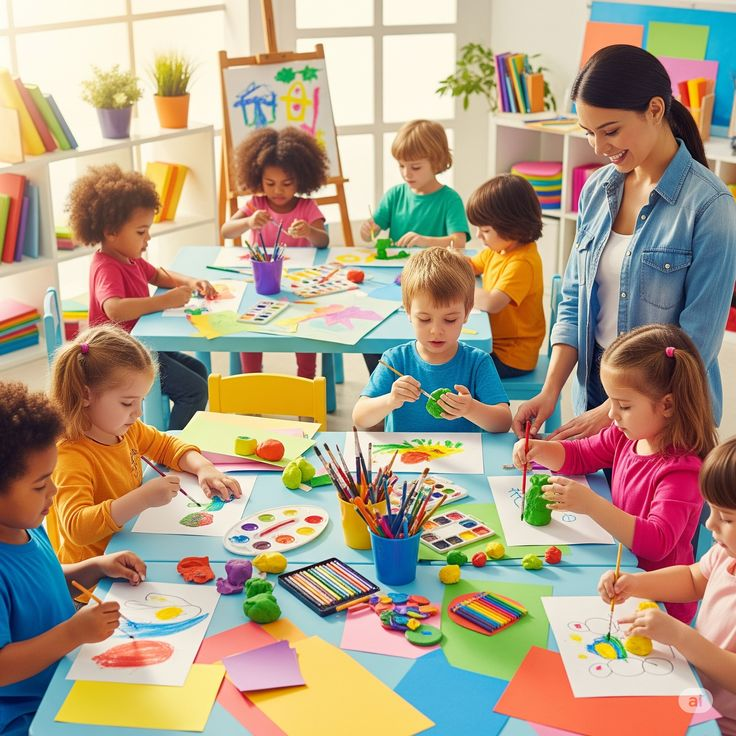
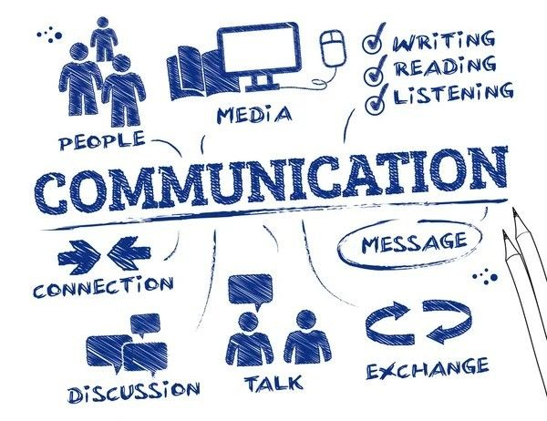
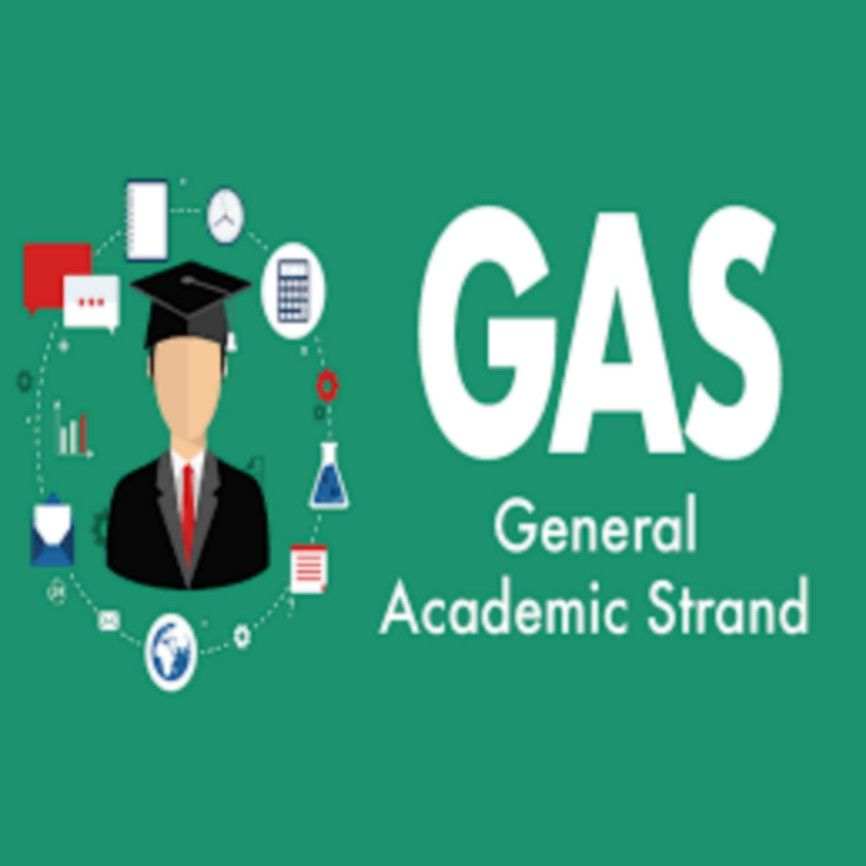

Our Programs
Preschool
Our Preschool program nurtures young learners through play-based activities, early literacy, and social skills development. It lays a strong foundation for lifelong learning and creativity.

Elementary Education
Our Elementary program builds a strong foundation in reading, writing, mathematics, and values education. Students are guided to develop creativity, discipline, and a love for learning.
Junior High School
The Junior High School program enhances students' academic skills and critical thinking. It prepares learners for higher education through a balanced curriculum and character formation.

Senior High School
Our Senior High School offers specialized strands to prepare students for college and careers. Explore each strand below:

